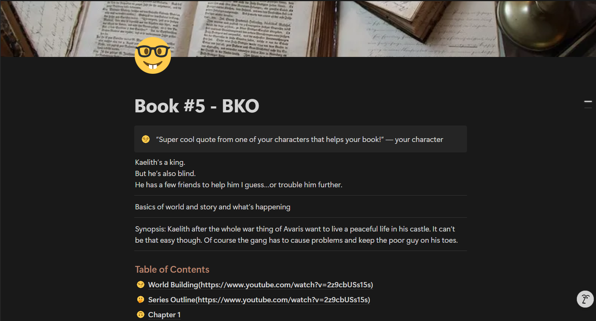

Who am I?😋
Personality
Personality is often a vague term used to describe the "vibe" of a person. I like to call it the constantly changing variable of which basic interests and values can be list out.
Interests
- Art
- Music
- Coding
- Data Analysis
Values
- To be in a position to be able to help anyone of free will.
- To have the people I like around me.
- Have enough money to live comfortably.
- Have a career that will make me happy and provide enough time to spend on hobbies of mine.
My View on Myself (vs. INTP)
| Trait | Me | INTP |
|---|---|---|
| Decision-Making | Emotional but makes myself think rational | Analytical by default |
| Social Interaction | Loves social presence with need for some solidarity | Reserved, prefers solitude |
| Creativity | Spontaneous and visual | Theoretical and abstract |
| Planning | Flexible, goes with the flow | Structured and future-focused |
| Values | Social connection, authenticity in my work | Truth in research |
Who do I want to become?😤
My Goals
Short Term
My goal which I have set to complete in the short term is to establish myself as an academic tutor by the start of summer.
Medium Term
My goal to complete before next school year is to complete a google data analytics certificate which I can then use to complete tasks and build my data analytics portfolio.
Long Term
My long term goal which will most likely take the span over years is to plan, write, and visualize a webtoon.
My Goals Timeline
| Time Frame | Goal | Action Steps | Why? |
|---|---|---|---|
| Short-Term (0–6 months) |
Become a Tutor |
- Make flyers to market - Post on WhatsApp groups and Fiverr - Get 2 students per week |
I need moneyyy 💸 |
| Medium-Term (6–12 months) |
Earn Google Certificate in Data Analysis |
- Wait for access to Google certificate account - Understand course outline - Work on course 30 minutes daily - Check in with myself every day |
I NEED DATATAATATAA 📊 |
| Long-Term (1–5 years) |
Start and Publish a Webtoon / Web Novel |
- Write a concept and main ideas - Write general structure - Script 2 episodes - Draw 1 episode and repeat from scripting - Post 1 episode per week |
I need art skills… 🎨 Start by end of May |
Keeping Track
Here's an example of how I keep track of my goals. For my long-term goal of making a webtoon, I keep all the information about the webtoon, its chapters, future plans, etc in a platform called Notion.
How do I deal with setbacks?😣
Stress
What is stress?
Stress is the biological "fight or flight response" where your body informs you when you are in danger when you are running away from a 10 foot tall bear. However, it can be quite the issue when you happen to NOT be running away from a 10 foot tall bear.
How do I experience and manage stress—A person reflection.
The stress I feel often stems from factors related to my academic responsibilities. Especially when I struggled to manage my time and I procrastinated a lot. Recently, I have begun to finish tasks as soon as I get them or atleast to the best of my ability to reduce the stress I would have felt with those tasks always in my mind.
For stress factors that I cannot control, I try to distract myself towards a personal project that I enjoy. For example, making a piece of art, working on my book, or working on my video game. Focusing my stress towards a productive personal task helps me calm myself down while not simply ignoring my stress like I would do if I distracted myself with social media of sorts.
Social Identity
Social identity, a part of everyone derived from their own place in society. My own view of my own identity comes from my experiences with the country I am from, the people around me, beliefs and values.